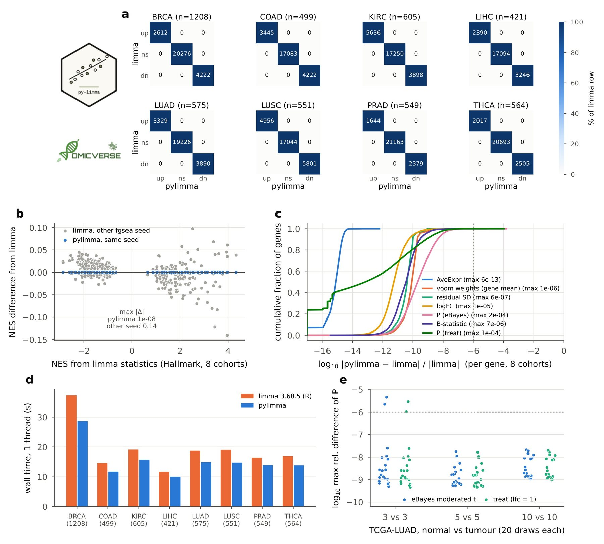
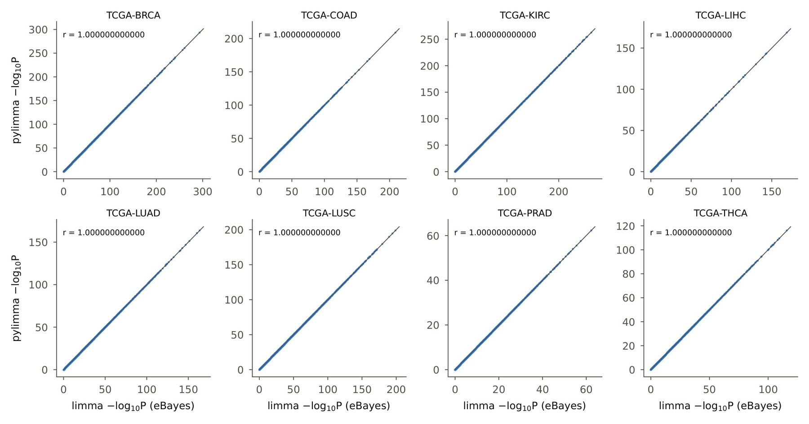

pylimma: a Python implementation of limma for differential expression analysis
Affiliations
- 1 Department of Genetics, Stanford University, Stanford, CA 94305, USA
- 2 OmicVerse, Inc., San Francisco, CA 94114, USA
- 3 Hubei Key Laboratory of Agricultural Bioinformatics, College of Informatics, Huazhong Agricultural University, Wuhan 430070, China
OmicVerse Technical Reports (2026)Cite this article
DOI https://doi.org/10.20944/preprints202611.1103.v1Preprints.org preprint, posted 11 November 2026
Download PDFAbstract
We present pylimma, a Python implementation of limma's linear-model workflow for differential expression analysis, covering voom precision weights, weighted linear model fits, empirical-Bayes moderated t- and F-statistics with the B-statistic, tests relative to a fold-change threshold (treat), contrasts and multiple testing. pylimma follows limma's algorithms step by step and is versioned against a specific limma release. On eight TCGA tumour–normal comparisons (4,972 samples) and 60 small-sample analyses, the limma-voom pipeline in pylimma returns the same differentially expressed genes as limma 3.68.5 with both the moderated t-test and treat, P-values within a relative difference of 1.6 × 10⁻⁴ (median 2.1 × 10⁻¹⁰) and identical gene-set enrichment results, while running 1.2–1.3 times faster than limma on one thread. pylimma is the limma backend of OmicVerse and is released under LGPL-3.0-or-later at https://github.com/omicverse/py-limma and on PyPI as python-limma.
- limma
- voom
- differential expression
- RNA-seq
- empirical Bayes
- Python
- reproducibility
Introduction
Differential expression (DE) analysis is the most common use of RNA-seq data1, and limma2 is one of the most widely used methods for it. limma fits a linear model to the expression of each gene and moderates the gene-wise variances towards a common or trended prior by empirical Bayes3, which stabilises inference when the number of samples is small. With voom4, which estimates the mean-variance relationship of log-counts and turns it into precision weights, the same linear-model machinery applies to RNA-seq counts, and limma-voom has become a standard pipeline for bulk RNA-seq5.
Omics analysis is increasingly done in Python. Single-cell and spatial workflows are built on scanpy and the scverse ecosystem6,7, and OmicVerse8 brings bulk, single-cell and spatial analyses together in one Python framework. Bulk and pseudobulk DE is a routine step in these workflows, but limma is available only in R.
Python users currently reach limma through rpy29. This requires a parallel R installation, converts data between the two languages at every call and exposes limma's options only through the binding layer. A native implementation removes all three costs, as PyDESeq210 has shown for DESeq211 and pyedger12 for edgeR13. We set the same target for pylimma: an analysis in Python should return the same genes, the same P-values and the same pathways as the same analysis in R.
Here we present pylimma, a Python implementation of limma's linear-model workflow that is versioned against a specific limma release and reproduces its results to numerical precision. We describe its implementation and compare the limma-voom pipeline with limma 3.68.5 on eight TCGA cohorts and 60 small-sample analyses.
Implementation
Statistical model
limma fits, for each gene, a linear model of the expression values on the design matrix, by weighted least squares when observation weights are given. The residual variances of all genes are assumed to follow a scaled inverse-chi-squared prior, whose scale is constant or depends on average expression. squeezeVar estimates its degrees of freedom and scale from the data, and each gene's posterior variance combines its own residual variance with the prior3. Coefficients and contrasts are then tested with moderated t-statistics that use the posterior variances and the augmented degrees of freedom, with moderated F-statistics for several coefficients jointly, and with the B-statistic, the log posterior odds that a gene is differentially expressed3. treat tests coefficients against a fold-change threshold instead of zero14. For RNA-seq counts, voom computes log-counts per million from normalised library sizes, fits a lowess curve15 to the square-root residual standard deviation against average log-count, and turns the fitted trend into a precision weight for every observation4.
Features and code structure
pylimma 0.1.1 implements this workflow as in limma 3.68 (Table 1): voom, with adaptive lowess span and optional blocking; lmFit, with observation weights, duplicate spots and correlated samples through duplicateCorrelation; contrasts.fit; eBayes, with abundance trend and robust hyper-parameter estimation16; treat; topTable, decideTests and removeBatchEffect. As in R, lmFit(v, design) takes the voom object directly, and every function is exported under a Python name (lm_fit) and its R name (lmFit), so a limma script translates line by line. pylimma builds on NumPy17, SciPy18 and statsmodels19, and returns results as pandas20 data frames with limma's column names.
| limma | pylimma | Largest difference from limma 3.68.5 on TCGA |
|---|---|---|
| voom | voom | weights $1.4 \times 10^{-6}$ |
| lmFit | lm_fit | residual SD $6.5 \times 10^{-7}$ |
| eBayes (prior) | ebayes | df.prior $1.9 \times 10^{-10}$, s2.prior $1.4 \times 10^{-9}$ |
| eBayes (t-test) | ebayes | P-value $1.6 \times 10^{-4}$ |
| eBayes (B-statistic) | ebayes | B $1.6 \times 10^{-4}$ (absolute) |
| treat | treat | P-value $1.1 \times 10^{-4}$ |
| topTable | top_table | same order (sorted by B) |
Numerical parity with limma
pylimma ports limma's algorithms instead of re-deriving the statistics. These include voom's choice of lowess span and its linear interpolation of the fitted trend, the per-gene weighted least-squares fits, fitFDist and the trigamma inversion that estimate the prior, the robust variant of squeezeVar16 and the limit on the total degrees of freedom. For the B-statistic, tmixture estimates the prior variance of non-zero coefficients from the largest t-statistics, bounded by stdev.coef.lim. As in limma, this bound enters only the B-statistic; the moderated t-statistic uses the unscaled standard deviations as fitted. Five tests check these steps against reference output of limma 3.68.5, including a design with a continuous covariate, and pylimma versions follow limma releases (0.1.x tracks limma 3.68.5).
Use in OmicVerse
pylimma is the limma backend of OmicVerse8: ov.bulk.pyDEG runs the limma-voom pipeline with deg_analysis and method='limma', tests continuous traits with continuous_deg and time courses with timecourse_deg, all on TMM-normalised21 library sizes from pyedger12.
Comparison with limma on TCGA
Data and design
We compared primary tumours with solid-tissue normal samples in eight TCGA projects22 (BRCA, COAD, KIRC, LIHC, LUAD, LUSC, PRAD and THCA), using STAR gene counts from the UCSC Xena GDC hub23 with one aliquot per participant (421 to 1,208 samples per cohort, 4,972 in total). We also drew 20 random subsets each of 3, 5 and 10 normal samples versus as many tumours from TCGA-LUAD; the data are those of the pyedger report12. Both packages ran the limma-voom pipeline of the limma user's guide: edgeR's filterByExpr and TMM normalisation (pyedger in Python), voom with design ~group, lmFit, then eBayes for the moderated t-test and treat with a log2 fold-change threshold of 1. Between 22,730 and 27,801 genes were retained per cohort. Genes were called DE at FDR ≤ 0.05 and $|\log_2 \text{FC}| \ge 1$ for the moderated t-test, and at FDR ≤ 0.05 for treat. We compared four criteria: DE calls, gene-set enrichment, the numerical agreement of the statistics and run time (Supplementary methods).
Differential expression and pathways
Across the eight cohorts limma's moderated t-test called 56,192 DE genes, and pylimma's calls were identical in every cohort (Fig. 1a); treat (32,277 genes) also gave identical calls, and no gene crossed the FDR threshold in one package but not the other. The $-\log_{10}P$ values of the two packages lie on the identity line (Fig. S1). Gene-set enrichment with fgsea24 on the MSigDB Hallmark collection25 gave identical calls for all 400 cohort-pathway pairs (261 significant), with normalised enrichment scores (NES) differing by at most $1.1 \times 10^{-8}$, far below fgsea's own seed-to-seed variation (Fig. 1b).

Numerical agreement and speed
The statistics agree to the precision of voom's lowess fit (Table 1, Fig. 1c). The empirical-Bayes prior degrees of freedom and prior variance agree to $1.9 \times 10^{-10}$ and $1.4 \times 10^{-9}$, and voom's precision weights to $1.4 \times 10^{-6}$. Per gene, log-fold changes agree to $1.2 \times 10^{-5}$ in relative terms.
Moderated t-test P-values agree within $1.6 \times 10^{-4}$ (median $2.1 \times 10^{-10}$), the largest differences occurring for the genes with the largest t-statistics, and B-statistics within $1.6 \times 10^{-4}$. In the 60 small-sample analyses the largest relative P-value difference was $4.6 \times 10^{-6}$, and all DE calls were identical (Fig. 1e).
pylimma ran the full pipeline 1.2 to 1.3 times faster than limma, both on one thread (Fig. 1d). For TCGA-BRCA, the largest cohort (1,208 samples), limma took 37 s and pylimma 29 s.
Conclusion and future perspectives
pylimma brings limma's linear-model workflow to Python with results that match limma to numerical precision. On eight TCGA cohorts of 421 to 1,208 samples and on 60 small-sample analyses, its limma-voom pipeline returns the same DE genes and pathways as limma 3.68.5 with both the moderated t-test and treat, and it runs faster than limma. Because pylimma works on pandas data frames and is part of OmicVerse, together with pyedger for count preprocessing, limma analyses can run in the same Python session as the rest of a bulk, single-cell or spatial workflow.
Future work includes the parts of limma beyond the core linear-model workflow: voomWithQualityWeights and arrayWeights, the gene-set tests camera, roast, fry and goana, the moderated F-test table topTableF, the microarray preprocessing functions and the plotting functions. pylimma will continue to follow limma releases, with each version pinned to the limma release it reproduces.
Data and code availability
pylimma is released under LGPL-3.0-or-later on PyPI (pip install python-limma; the import name is pylimma) and at https://github.com/omicverse/py-limma; this report describes version 0.1.1. The benchmark (report/scripts in the repository, with the task builder of py-edgeR) reproduces every number and figure in this report. TCGA STAR counts were obtained from the UCSC Xena GDC hub (https://gdc-hub.s3.us-east-1.amazonaws.com) and MSigDB Hallmark 2020 gene sets from Enrichr, both accessed on 9 November 2026. Software: pylimma 0.1.1 and pyedger 0.2.3 (Python 3.10, NumPy 2.2.6, SciPy 1.15.2); limma 3.68.5, edgeR 4.10.5 and fgsea 1.36.2 on R 4.5.3 (bioconda). Hardware: one node of the Stanford Sherlock cluster (Intel Xeon Platinum 8462Y+, 20 cores allocated).
Declaration of generative AI and AI-assisted technologies
The authors used Claude Opus 5.5, GPT-6 Astra, and OmicOS to proofread grammar and syntax, improve readability. Any AI-assisted edits were reviewed by the authors, who take full responsibility for the content of this publication.
Conflicts of interest
Z.Z. and X.M. are affiliated with OmicVerse, Inc.
References
- 1.Stark R, Grzelak M, Hadfield J (2019). RNA sequencing: the teenage years. Nature Reviews Genetics 20, 631-656. 10.1038/s41576-019-0150-2
- 2.Ritchie ME, Phipson B, Wu D, et al. (2015). limma powers differential expression analyses for RNA-sequencing and microarray studies. Nucleic Acids Research 43, e47. 10.1093/nar/gkv007
- 3.Smyth GK (2004). Linear models and empirical Bayes methods for assessing differential expression in microarray experiments. Statistical Applications in Genetics and Molecular Biology 3, Article 3. 10.2202/1544-6115.1027
- 4.Law CW, Chen Y, Shi W, Smyth GK (2014). voom: precision weights unlock linear model analysis tools for RNA-seq read counts. Genome Biology 15, R29. 10.1186/gb-2014-15-2-r29
- 5.Law CW, Alhamdoosh M, Su S, et al. (2018). RNA-seq analysis is easy as 1-2-3 with limma, Glimma and edgeR. F1000Research 5, 1408. 10.12688/f1000research.9005.3
- 6.Wolf FA, Angerer P, Theis FJ (2018). SCANPY: large-scale single-cell gene expression data analysis. Genome Biology 19, 15. 10.1186/s13059-017-1382-0
- 7.Virshup I, Bredikhin D, Heumos L, et al. (2023). The scverse project provides a computational ecosystem for single-cell omics data analysis. Nature Biotechnology 41, 604-606. 10.1038/s41587-023-01733-8
- 8.Zeng Z, Ma Y, Hu L, et al. (2024). OmicVerse: a framework for bridging and deepening insights across bulk and single-cell sequencing. Nature Communications 15, 5983. 10.1038/s41467-024-50194-3
- 9.Gautier L. rpy2: Python interface to the R language. https://rpy2.github.io
- 10.Muzellec B, Teleńczuk M, Cabeli V, Andreux M (2023). PyDESeq2: a python package for bulk RNA-seq differential expression analysis. Bioinformatics 39, btad547. 10.1093/bioinformatics/btad547
- 11.Love MI, Huber W, Anders S (2014). Moderated estimation of fold change and dispersion for RNA-seq data with DESeq2. Genome Biology 15, 550. 10.1186/s13059-014-0550-8
- 12.Zeng Z, Meng X (2026). pyedger: a Python implementation of edgeR for differential expression analysis. OmicVerse Technical Reports. https://omicverse.org/articles/pyedger.html
- 13.Robinson MD, McCarthy DJ, Smyth GK (2010). edgeR: a Bioconductor package for differential expression analysis of digital gene expression data. Bioinformatics 26, 139-140. 10.1093/bioinformatics/btp616
- 14.McCarthy DJ, Smyth GK (2009). Testing significance relative to a fold-change threshold is a TREAT. Bioinformatics 25, 765-771. 10.1093/bioinformatics/btp053
- 15.Cleveland WS (1979). Robust locally weighted regression and smoothing scatterplots. Journal of the American Statistical Association 74, 829-836. 10.1080/01621459.1979.10481038
- 16.Phipson B, Lee S, Majewski IJ, Alexander WS, Smyth GK (2016). Robust hyperparameter estimation protects against hypervariable genes and improves power to detect differential expression. Annals of Applied Statistics 10, 946-963. 10.1214/16-AOAS920
- 17.Harris CR, Millman KJ, van der Walt SJ, et al. (2020). Array programming with NumPy. Nature 585, 357-362. 10.1038/s41586-020-2649-2
- 18.Virtanen P, Gommers R, Oliphant TE, et al. (2020). SciPy 1.0: fundamental algorithms for scientific computing in Python. Nature Methods 17, 261-272. 10.1038/s41592-019-0686-2
- 19.Seabold S, Perktold J (2010). statsmodels: econometric and statistical modeling with Python. Proceedings of the 9th Python in Science Conference, 92-96. 10.25080/Majora-92bf1922-011
- 20.McKinney W (2010). Data structures for statistical computing in Python. Proceedings of the 9th Python in Science Conference, 56-61. 10.25080/Majora-92bf1922-00a
- 21.Robinson MD, Oshlack A (2010). A scaling normalization method for differential expression analysis of RNA-seq data. Genome Biology 11, R25. 10.1186/gb-2010-11-3-r25
- 22.Cancer Genome Atlas Research Network, Weinstein JN, Collisson EA, et al. (2013). The Cancer Genome Atlas Pan-Cancer analysis project. Nature Genetics 45, 1113-1120. 10.1038/ng.2764
- 23.Goldman MJ, Craft B, Hastie M, et al. (2020). Visualizing and interpreting cancer genomics data via the Xena platform. Nature Biotechnology 38, 675-678. 10.1038/s41587-020-0546-8
- 24.Korotkevich G, Sukhov V, Budin N, Shpak B, Artyomov MN, Sergushichev A (2016). Fast gene set enrichment analysis. bioRxiv. 10.1101/060012
- 25.Liberzon A, Birger C, Thorvaldsdóttir H, Ghandi M, Mesirov JP, Tamayo P (2015). The Molecular Signatures Database hallmark gene set collection. Cell Systems 1, 417-425. 10.1016/j.cels.2015.12.004
Supplementary information
Supplementary methods
Count data and small-sample analyses. The cohorts, sample selection and the 60 TCGA-LUAD subsets are those of the pyedger report12: integer counts were recovered from the $\log_2(\text{count}+1)$ values of the Xena hub, samples whose values were averages of replicate aliquots were removed, and each subset drew 3, 5 or 10 solid-tissue normal samples and as many primary tumours without replacement.
Pipeline. In R: DGEList, filterByExpr, y[keep, , keep.lib.sizes = FALSE], normLibSizes, voom(y, design), fit <- lmFit(v, design), eBayes(fit) and treat(fit, lfc = 1). In Python the count preprocessing used pyedger 0.2.312, which reproduces edgeR's filtering and TMM factors to $4.9 \times 10^{-15}$, followed by voom with the effective library sizes, lmFit(v, design), eBayes and treat from pylimma. limma's defaults were used throughout, including voom's adaptive lowess span.
Gene-set enrichment. For each full cohort, genes were ranked by the moderated t-statistic, and fgsea was run on the 50 MSigDB Hallmark gene sets (minimum size 15, maximum size 500) once from limma's and once from pylimma's statistics with the same seed. Pathways were called enriched at adjusted P ≤ 0.05. To show the scale of fgsea's Monte-Carlo variation, fgsea was also run on limma's statistics with a second seed, which changed 5 of the 400 calls and moved NES by up to 0.14 (Fig. 1b, grey).
Run time. Run times are wall-clock times of the full pipeline, from normalisation to both tests, with one run per cohort and package, one thread and BLAS pinned to one thread. limma and pylimma ran as one process per cohort in parallel on the same node, so that both were timed under the same load.
Notes for users coming from R
- Installation. The PyPI distribution is
python-limmaand the import name ispylimma. An independent Python port of limma is distributed on PyPI under the namepylimma(https://github.com/john-mulvey/pylimma); the package described here is installed withpip install python-limma. - Versions. pylimma 0.1.x tracks limma 3.68.5, including its defaults (for example voom's adaptive lowess span).
- Indices are 0-based.
topTable(fit, coef=1)in Python iscoef = 2in R; coefficient names are also accepted. - Library sizes.
voomtakes counts and the effective library sizes (library size × normalisation factor), for example from pyedger'seffective_lib_sizes, where limma'svoomreads them from aDGEList.

Author information
Affiliations
- 1 Department of Genetics, Stanford University, Stanford, CA 94305, USA
- 2 OmicVerse, Inc., San Francisco, CA 94114, USA
- 3 Hubei Key Laboratory of Agricultural Bioinformatics, College of Informatics, Huazhong Agricultural University, Wuhan 430070, China
Corresponding authors
Correspondence to Zehua Zeng.
Cite this article
Zeng, Z. & Meng, X. pylimma: a Python implementation of limma for differential expression analysis. OmicVerse Technical Reports (2026). https://doi.org/10.20944/preprints202611.1103.v1
@techreport{zeng2026pylimma,
title = {pylimma: a Python implementation of limma for differential expression analysis},
author = {Zeng, Zehua and Meng, Xu},
institution = {OmicVerse},
type = {Technical Report},
year = {2026},
doi = {10.20944/preprints202611.1103.v1},
url = {https://omicverse.org/articles/pylimma}
}